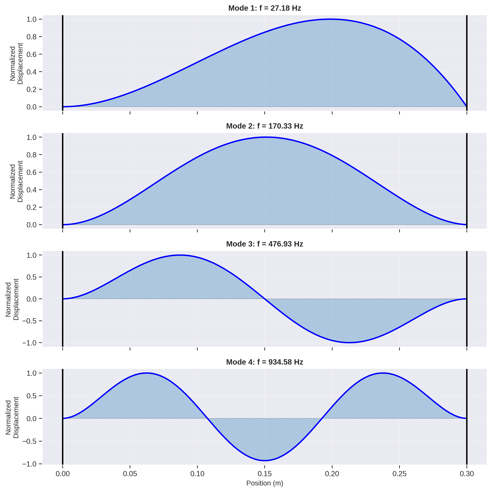
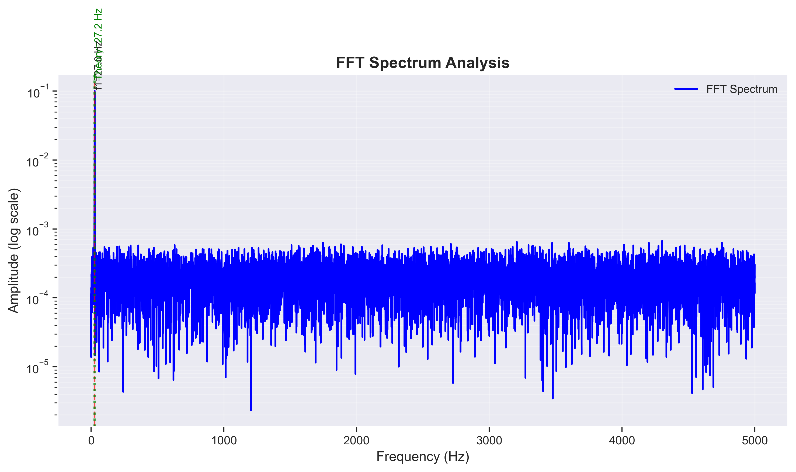
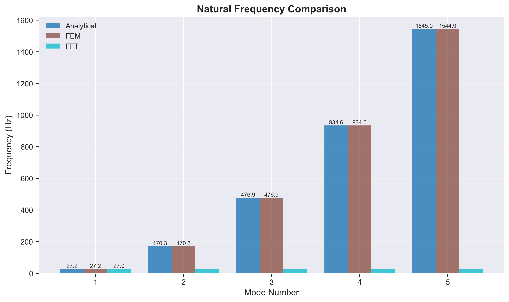
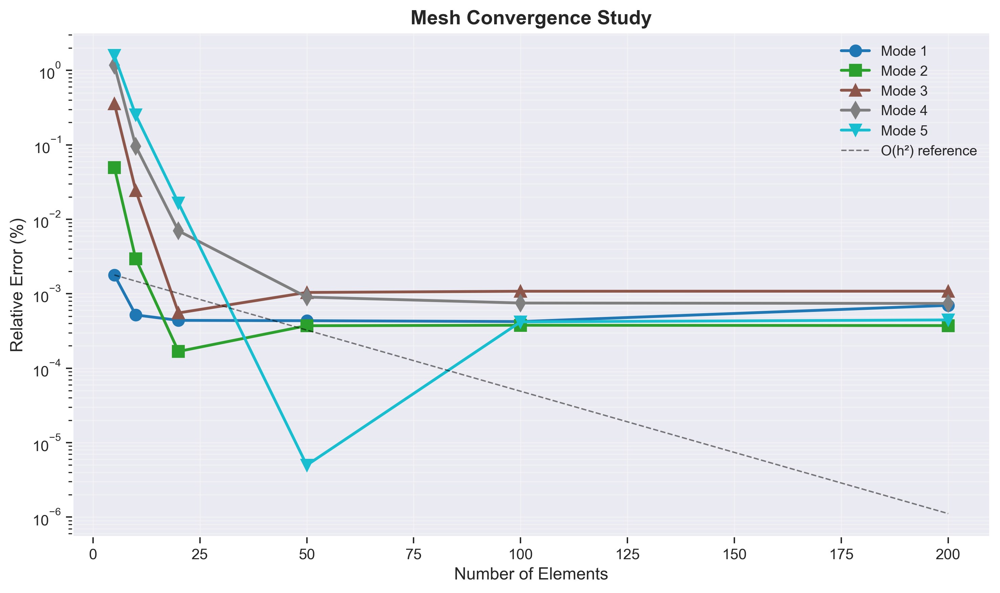
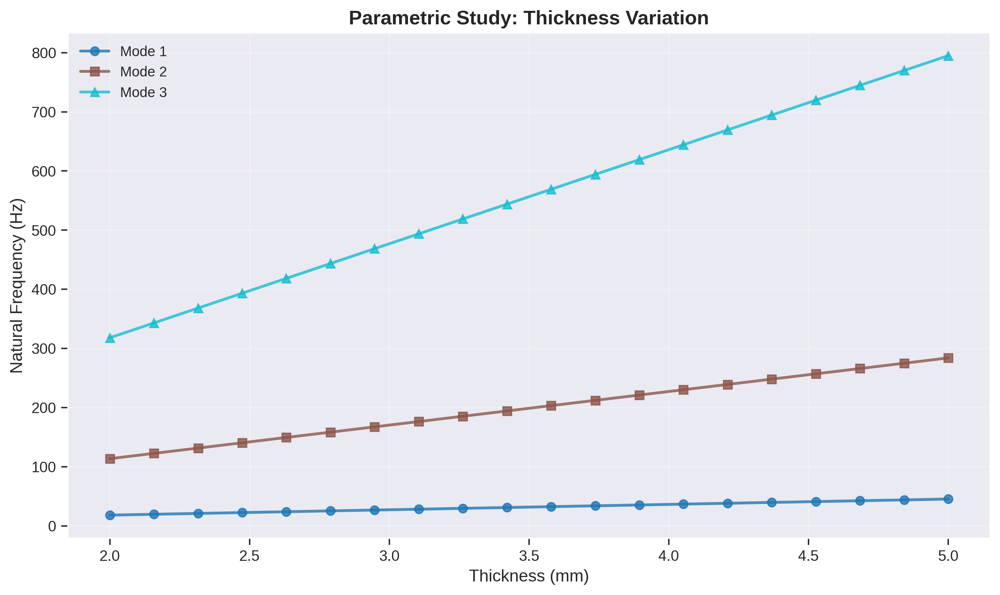
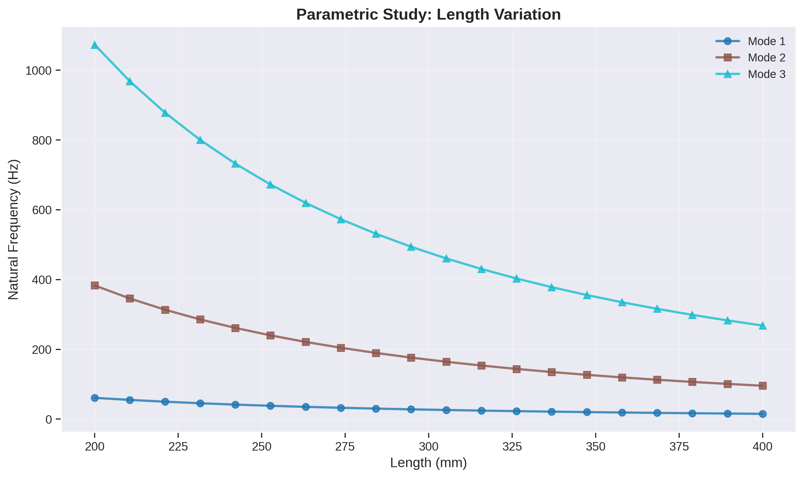
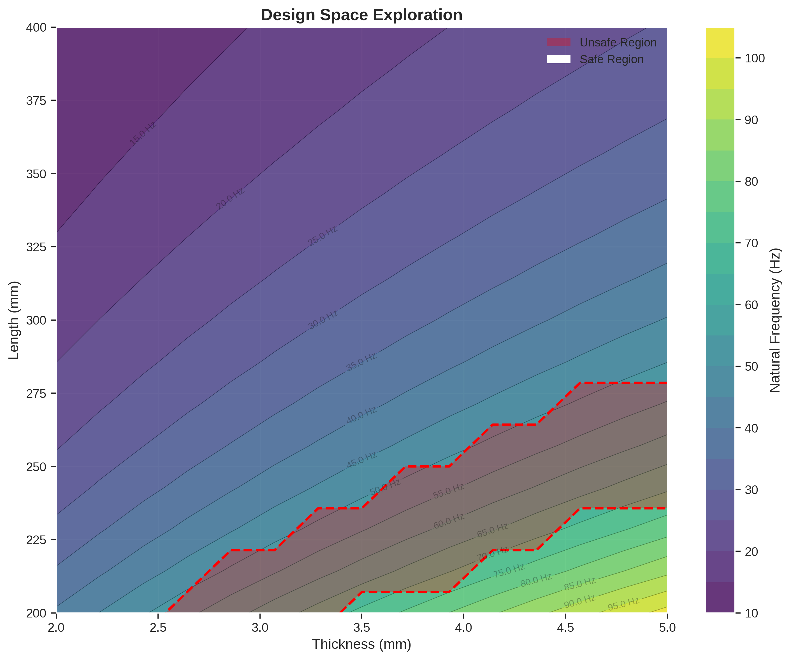
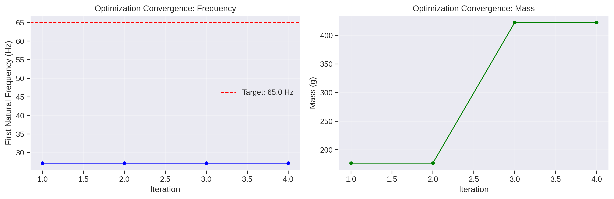
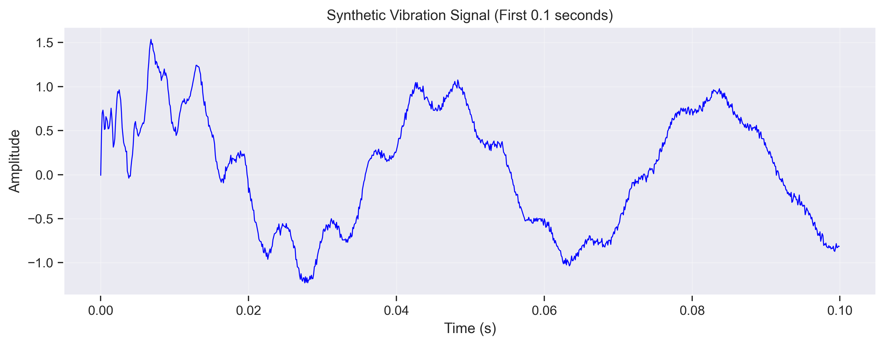
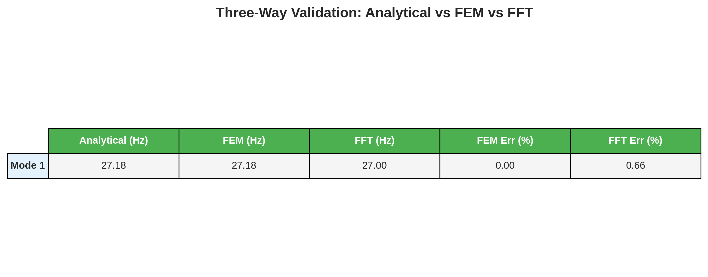

Project Overview
Euler-Bernoulli beam theory for exact natural frequency computation.
From-scratch finite element implementation with configurable mesh density.
Synthetic vibration signal generation and frequency-domain identification.
Cross-validation between Analytical, FEM, and FFT results.
Thickness and length sweeps to map the structural design space.
Minimize mass while keeping the first mode above a target frequency.
Analysis Workflow
- Define beam geometry and steel material properties.
- Compute analytical natural frequencies using Euler-Bernoulli theory.
- Assemble global stiffness and mass matrices via FEM; solve eigenvalue problem.
- Synthesize a time-domain vibration signal and extract frequencies via FFT.
- Validate all three methods against each other.
- Run mesh convergence study to confirm FEM accuracy.
- Perform parametric sweeps over thickness and length.
- Optimize beam geometry to avoid resonance with a 50 Hz pump.
Analysis Results

First four bending mode shapes of the cantilever beam overlaid on the beam geometry.

Frequency-domain spectrum extracted from a synthetic vibration signal via FFT.

Side-by-side comparison of Analytical, FEM, and FFT natural frequencies.

FEM frequency convergence as a function of element count.

Natural frequency variation with beam thickness.

Natural frequency variation with beam length.

Contour map of the first natural frequency across the thickness–length design space.

Iterative convergence of the design optimization to avoid resonance.

Synthetic vibration response used for FFT-based frequency identification.

Tabular comparison of all three methods with percentage errors.